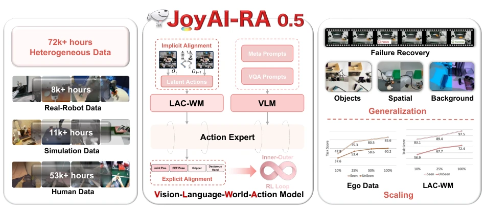
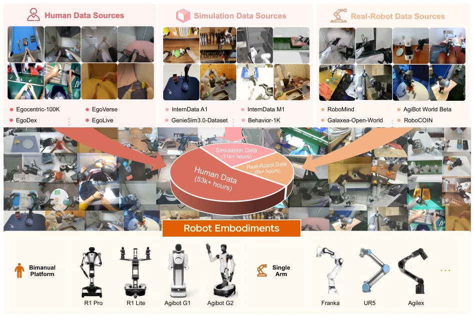
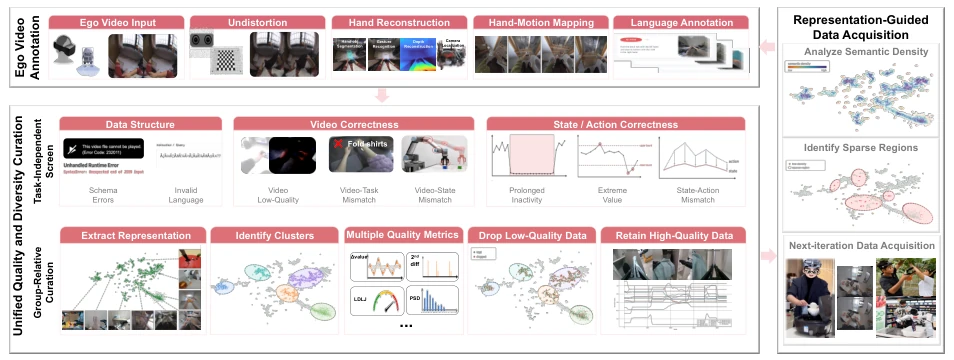
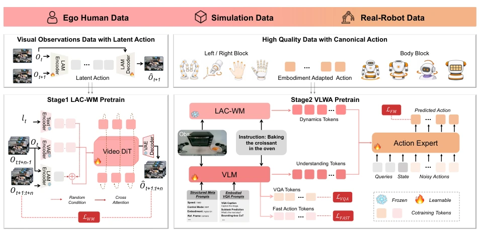
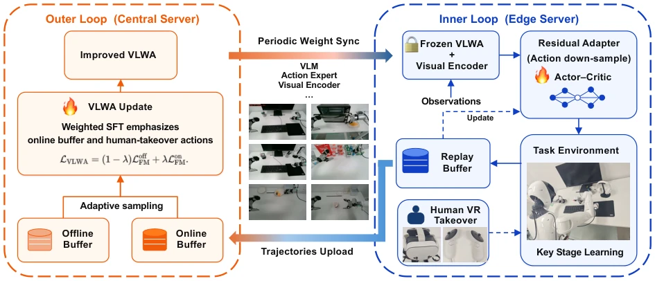
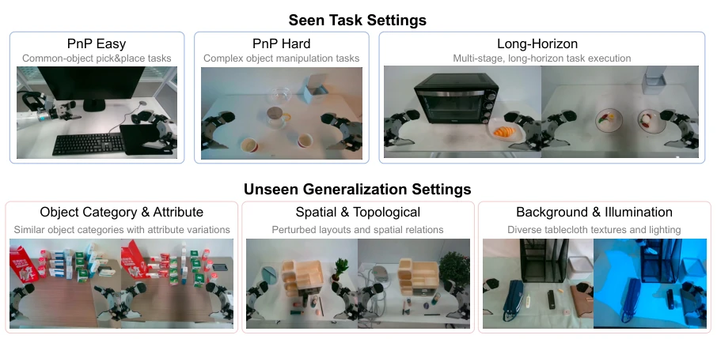
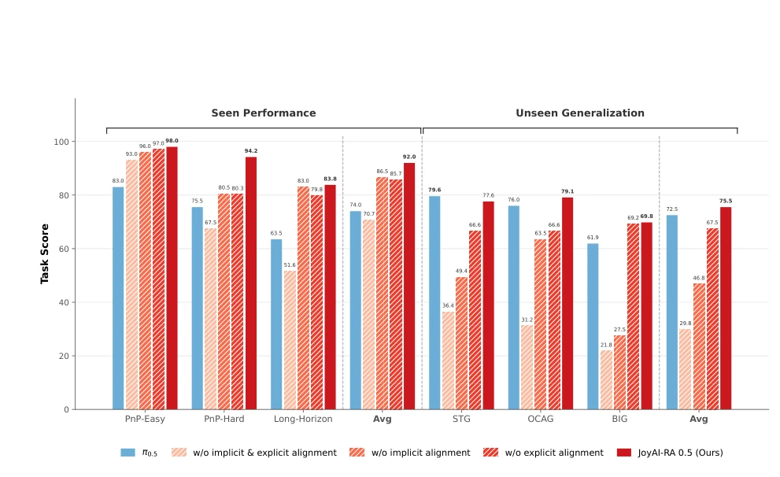
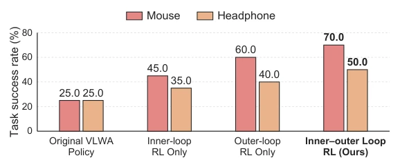
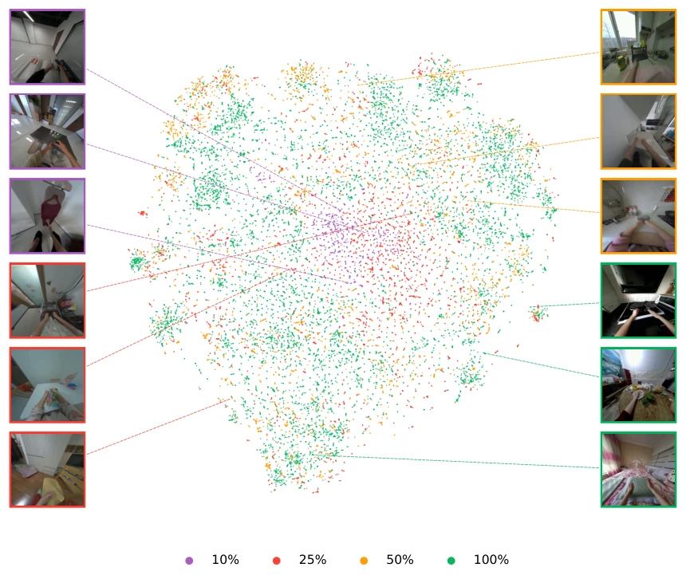
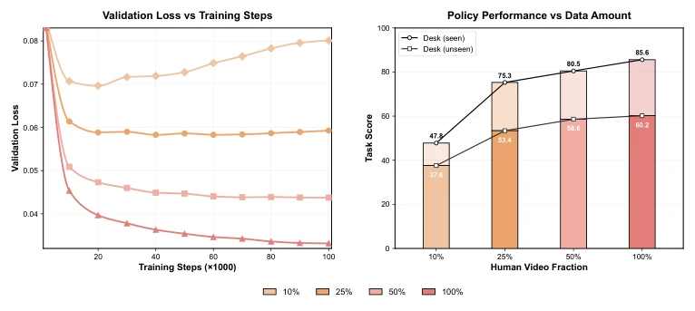

JoyAI-RA 0.5 试图用“双重对齐”把人类视频这种“乱码”强行翻译成机器人能懂的“物理语言”，这想法很性感，但执行起来简直是给机器人做“语言翻译官”的极限挑战。亮点在于它没把人类视频当废柴，而是通过隐式对齐挖掘出通用的物理动态，确实让“弱监督”变成了“强信号”，Scaling Law 在人类数据上依然有效这点很让人惊喜。但槽点也不少：把人类手部和机器人机械臂强行映射到同一个 130 维空间，这种“削足适履”的显式对齐，真的能保留人类操作的细腻度吗？而且依赖多视角重建和复杂的预处理，一旦摄像头视角一变，这套精密的“对齐”机器会不会直接崩盘？另外，虽然号称通用，但核心还是依赖大量高质量仿真和真机数据做微调，人类视频更多是“预训练燃料”，离真正的“零样本”通用还有距离。
JoyAI-RA 0.5 attempts to forcibly translate human videos, which are like "garbled code", into a "physical language" understandable by robots using "double alignment". This idea is very appealing, but executing it is simply an extreme challenge of acting as a "language translator" for robots. The highlight is that it does not treat human videos as trash, but instead excavates general physical dynamics through implicit alignment, truly turning "weak supervision" into "strong signals"; the fact that Scaling Law remains effective on human data is quite surprising. But there are also many drawbacks: forcibly mapping human hands and robot manipulators into the same 130-dimensional space, this "cutting the foot to fit the shoe" explicit alignment, can it really retain the delicacy of human operations? Moreover, relying on multi-view reconstruction and complex preprocessing, once the camera viewpoint changes, will this precise "alignment" machine collapse directly? Additionally, although claimed to be general, the core still relies on a large amount of high-quality simulation and real machine data for fine-tuning; human videos are more like "pre-training fuel", still far from true "zero-shot" generalization.
Robot manipulation data is scarce and expensive, solely relying on robot demonstrations (Robot Demonstrations) limits generalization capabilities [7]. Existing Vision-Language-Action (VLA) models, while good at semantic understanding, lack physical dynamic perception and cannot effectively utilize massive human videos without action annotations [5, 6]. While World-Action Models (WAMs) can predict physical dynamics, they lack semantic grounding and typically rely on action annotations, unable to utilize human videos [15, 25]. Existing Latent Action Models (LAMs) attempt to solve cross-embodiment alignment, but are mostly based on single views and have not been scaled to heterogeneous data [9, 67]. JoyAI-RA aims to resolve this contradiction: how to extract shared, transferable supervision from human videos, simulation data, and real machine data lacking reliable action labels, avoiding negative transfer caused by simple mixing.

Figure 1 JoyAI-RA 0.5 is a Vision-Language-World-Action framework for scaling learning robot manipulation from heterogeneous data through dual action alignment.
JoyAI-RA 0.5 is a Vision-Language-World-Action (VLWA) framework, the core of which is integrating heterogeneous data through "double action alignment". The overall process is divided into data preprocessing, two-stage pre-training, and reinforcement learning fine-tuning. The data layer integrates 53k+ hours of human videos, 11k+ hours of simulation, and 8k+ hours of real machine data. Innovations include: 1. Implicit Alignment: Utilizing Latent Action Models (LAM) to infer "Latent Actions" from multi-view visual state transitions, serving as conditioning for the World Model (LAC-WM), converting human videos without action labels into physical dynamic supervision, decoupling the strong binding between actions and vision. 2. Explicit Alignment: Constructing a unified 130-dimensional normalized state-action space, mapping human hand trajectories and robot actions to the same physical space, and adopting camera frame relative end-effector action representation to eliminate embodiment differences. 3. Architecture Design: VLM handles semantics, LAC-WM handles dynamics, both fused and input to Flow-Matching Action Expert to generate actions. Training is divided into four steps: first pre-train LAC-WM to learn dynamics, then freeze LAC-WM for VLWA joint pre-training, next fine-tune for target robots, finally achieve rapid adaptation and continuous evolution through Inner-Outer Loop RL.

Figure 2 Overview of the pre-training dataset. The pre-training dataset combines open-source Internet datasets, self-collected human and real-robot demonstrations, and simulation trajectories, totaling 53K+, 11K+, and 8K+ hours, respectively, across diverse bimanual and single-arm embodiments.

Figure 3 Closed-Loop Data Preprocessing and Curation Pipeline. Ego videos are first annotated automatically and then jointly processed with robot trajectories through unified quality and diversity curation, while representation- guided analysis directs subsequent data acquisition.

Figure 4 Overview of the two-stage pretraining framework. Implicit alignment learns transferable dynamics from heterogeneous videos through latent-action-conditioned world-model pretraining, while explicit alignment maps reliable human and robot trajectories into a unified action space. The VLM and LAC-WM provide complementary semantic and dynamics representations that jointly condition the action expert for executable robot control.

Figure 5 Overview of the inner-outer loop reinforcement learning framework. The inner loop performs efficient task-specific adaptation on the edge server, while the asynchronous outer loop improves the VLWA model on the central server and periodically synchronizes the updated parameters back, forming a closed self-improving loop.
A real-world benchmark was constructed on the AgiBot G1 robot platform, covering pick-and-place, high-precision manipulation, and long-horizon tasks. Evaluation is divided into "Seen Tasks" and "Unseen Generalization" (new objects, spatial layout, lighting, etc.). Results show that JoyAI-RA outperforms baselines in both settings, and as the amount of human video pre-training data increases, performance continues to improve without appearing a plateau, verifying the effectiveness of human videos as the primary scaling axis. Ablation studies show that implicit and explicit alignment are complementary, neither can be missing. Additionally, the Inner-Outer Loop RL strategy significantly improved success rates in task-specific scenarios. Visualizations show that as data scale expands, the latent action space distribution becomes tighter, proving the effectiveness of data alignment.

Figure 6 Overview of the task and generalization settings.

Figure 7 Real-world task scores of different methods under seen performance and unseen generalization. JoyAI-RA 0.5 achieves the highest average score in both settings. The alignment ablations further demonstrate the complementary contributions of implicit and explicit alignment to task execution and generalization.

Figure 8 Success-rate comparison of different RL strategies on pick-and-place tasks.

Figure 9 T-SNE visualization of the action-embedding distributions of EgoLive at different dataset scales (10%, 25%, 50%, and 100%). The four data fractions form nested subsets, such that each smaller-scale dataset is fully contained in all larger-scale datasets.

Figure 10 Scaling with EgoLive dataset. Left: held-out human validation loss over pretraining steps using 10%, 25%, 50%, and 100% of EgoLive. Right: seen- and unseen-task task scores after identical robot-action post-training. Higher, lighter bars denote seen tasks, while lower, saturated bars denote unseen tasks.